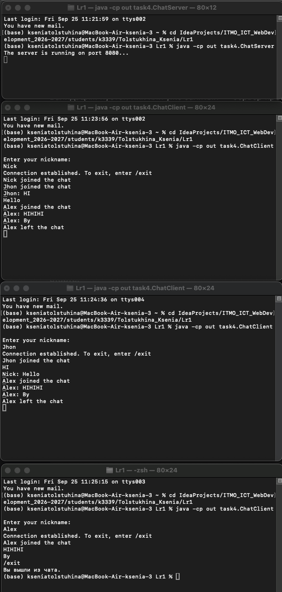

Задание 4 - Чат на сокетах
Задача
Реализовать многопользовательский чат на TCP. Требования:
- обслуживание нескольких клиентов;
- идентификация пользователей;
- возможность выйти из чата;
- один клиентский скрипт, запускаемый несколько раз
Теория
Сервер держит список активных подключений и рассылает входящие сообщения всем. Каждое соединение обслуживается отдельным потоком. В Java потоки — через ExecutorService или Thread, список клиентов — ConcurrentHashMap
Код сервера
package task4;
import java.io.*;
import java.net.ServerSocket;
import java.net.Socket;
import java.util.concurrent.ConcurrentHashMap;
public class ChatServer {
private static final int PORT = 8080;
private static final ConcurrentHashMap<String, ClientHandler> clients = new ConcurrentHashMap<>();
public static void main(String[] args) throws IOException {
new ChatServer().start(PORT);
}
public void start(int port) throws IOException {
try (ServerSocket serverSocket = new ServerSocket(port)){
System.out.println("The server is running on port 8080...");
while (true) {
Socket clientSocket = serverSocket.accept();
ClientHandler handler = new ClientHandler(clientSocket);
new Thread(handler).start();
}
}
}
private void broadcast(String message, String nickName) {
for (ClientHandler client : clients.values()) {
if (!client.nickName.equals(nickName)) client.send(message);
}
}
private void broadcastSystem(String message) {
for (ClientHandler client : clients.values()) client.send(message);
}
private class ClientHandler implements Runnable {
private final Socket clientSocket;
private BufferedReader input;
private PrintWriter output;
private String nickName;
ClientHandler(Socket socket) {
this.clientSocket = socket;
}
@Override
public void run() {
try {
input = new BufferedReader(new InputStreamReader(clientSocket.getInputStream(), "UTF-8"));
output = new PrintWriter(new OutputStreamWriter(clientSocket.getOutputStream(), "UTF-8"), true);
if (!registerUser()) return;
broadcastSystem(nickName + " joined the chat");
String line;
while ((line = input.readLine()) != null) {
if (line.equalsIgnoreCase("/exit")) break;
else if (line.trim().isEmpty()) continue;
else broadcast(nickName + ": " + line, nickName);
}
} catch (IOException e) {
System.out.println("Connection to " + safeName() + " has been interrupted: " + e.getMessage());
} finally {
disconnect();
}
}
private boolean registerUser() throws IOException {
output.println("Enter your nickname:");
while (true) {
String name = input.readLine();
if (name == null) return false;
name = name.trim();
if (name.isEmpty()) {
output.println("The name cannot be empty. Please try again:");
continue;
}
if (clients.containsKey(name)) {
output.println("This name is already taken. Enter another:");
continue;
}
nickName = name;
clients.put(nickName, this);
output.println("OK");
return true;
}
}
void send(String message) {
output.println(message);
}
private String safeName() {
return nickName != null ? nickName : "unknown";
}
private void disconnect() {
if (nickName != null) {
clients.remove(nickName);
broadcastSystem(nickName + " left the chat");
}
try {
clientSocket.close();
} catch (IOException ignored) { }
}
}
}
Код клиента
package task4;
import java.io.*;
import java.net.Socket;
public class ChatClient {
public static void main(String[] args) throws IOException {
String HOST = "localhost";
int PORT = 8080;
Socket socket = new Socket(HOST, PORT);
BufferedReader input = new BufferedReader(new InputStreamReader(socket.getInputStream(), "UTF-8"));
PrintWriter output = new PrintWriter(new OutputStreamWriter(socket.getOutputStream(), "UTF-8"), true);
BufferedReader console = new BufferedReader(new InputStreamReader(System.in, "UTF-8"));
System.out.println(input.readLine());
String response;
do {
String nickName = console.readLine();
output.println(nickName);
response = input.readLine();
if (response == null) {
System.out.println("The server closed the connection");
return;
}
if (!response.equals("OK")) System.out.println(response);
} while (!response.equals("OK"));
System.out.println("Connection established. To exit, enter /exit");
Thread readerThread = new Thread(() -> {
try {
String message;
while ((message = input.readLine()) != null) System.out.println(message);
} catch (IOException e) {
System.out.println("The connection is closed");
}
});
readerThread.setDaemon(true);
readerThread.start();
String userInput;
while ((userInput = console.readLine()) != null) {
if (userInput.trim().isEmpty()) continue;
output.println(userInput);
if (userInput.equalsIgnoreCase("/exit")) break;
}
System.out.println("You have left the chat");
socket.close();
}
}
Запуск
# Терминал 1
java -cp out task4.ChatServer
# Терминал 2
java -cp out task4.ChatClient
# Терминал 3
java -cp out task4.ChatClient
# Терминал 4
java -cp out task4.ChatClient
Пример
